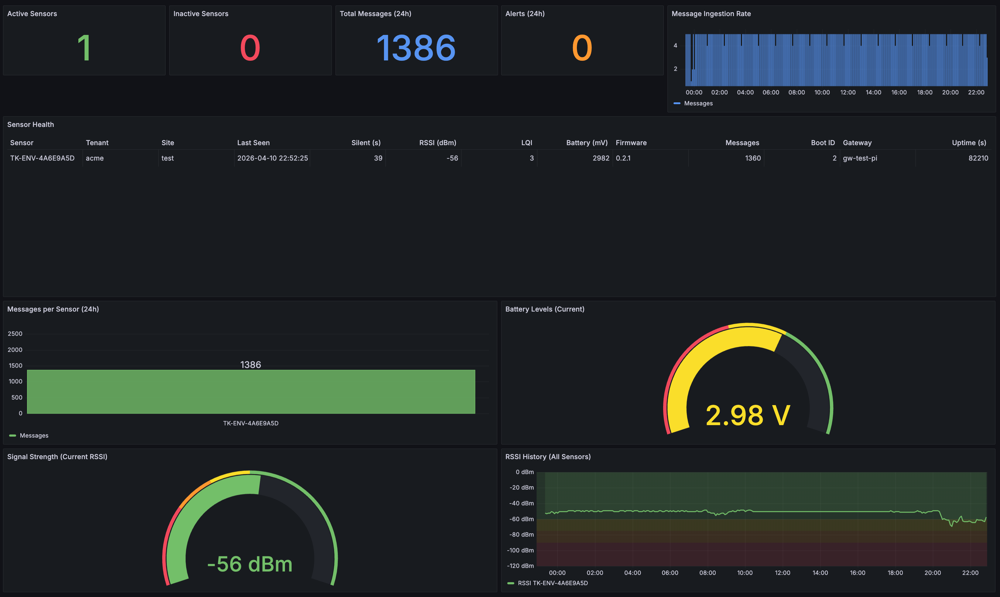
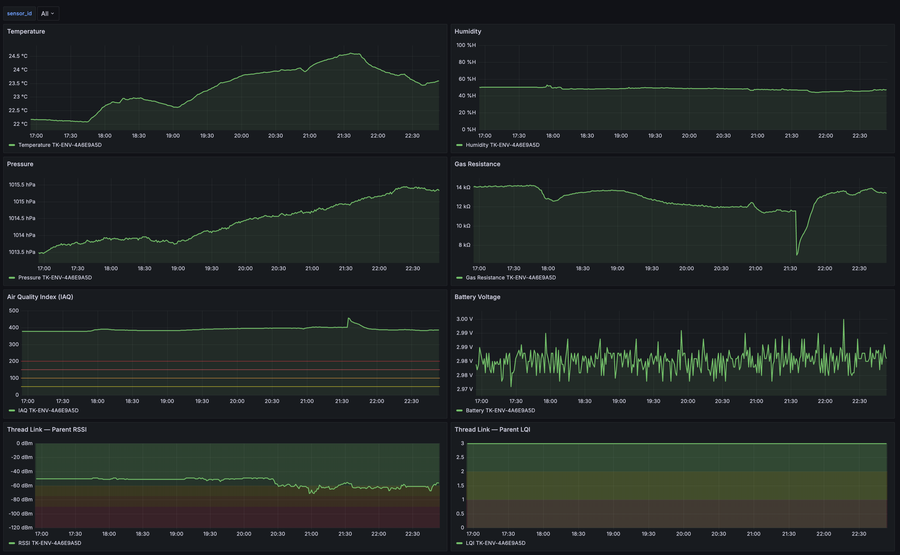

Weak device identity
Keys generated in software, shared across platforms, or verified only at the network layer. No hardware trust root means identity can be cloned or forged without physical access.
nRF52840 · ATECC608A · Thread · HPKE · MCUboot
Telemetry is signed in secure hardware and encrypted on the sensor before it enters the network. The gateway verifies and forwards, but cannot decrypt. Plaintext appears only inside the controlled cloud ingestion boundary.
Secure infrastructure for industrial IoT, from device to cloud.
End-to-end means the gateway is outside the confidentiality boundary. Signing keys live in the ATECC608A. Decryption keys live in the cloud. The gateway holds no device private keys and no payload decryption keys.
The problem
Many industrial IoT platforms encrypt data in transit but terminate encryption at the gateway or edge processor. Plaintext appears at the first aggregation point — the same box that routes, buffers, and integrates data. That widens compliance scope, concentrates insider risk, and creates audit problems that no amount of TLS can resolve.
Keys generated in software, shared across platforms, or verified only at the network layer. No hardware trust root means identity can be cloned or forged without physical access.
TLS terminates at the gateway. From there, telemetry is in the clear — exposed to every integration, log stream, and operator session on the edge device.
When the gateway can read customer data, it enters scope for every regulation, audit, and breach notification framework — even if it adds no analytical value.
Many IoT platforms stop at transport. Firmware updates, rollback safety, and device lifecycle tracking are left to manual scripts and hope.
The TrustKern approach
ECDSA P-256 signing key generated and held on-chip. Private key never visible to firmware, JTAG, or any external interface.
Devices are commissioned over BLE GATT via the iOS app. BLE is disabled after provisioning. All operational telemetry flows over Thread 802.15.4 mesh.
Every message is a deterministic CBOR envelope — signed with the hardware key and encrypted with HPKE. The gateway receives ciphertext only.
Signatures and anti-replay checked at the gateway, then checked again at the collector. Two independent verification points before any data is stored.
How TrustKern works
Nine steps, three trust boundaries. The gateway sits between the device and cloud boundaries — transporting and verifying, but never decrypting.
Sensor board — nRF52840 SoC + ATECC608A secure element. Signing key generated on-chip and never exportable. Payload encrypted with HPKE before leaving the device. BME688 environmental + BMI270 motion sensors.
Edge relay — Raspberry Pi with OTBR for Thread border routing + tk-gateway application. Verifies ECDSA signatures, enforces boot_id/seq anti-replay, publishes raw encrypted envelopes over MQTTS. No decryption keys, no plaintext access.
Cloud ingestion — Collector verifies signatures again (defense-in-depth), opens HPKE ciphertext, parses sensor JSON payload, persists to TimescaleDB, and updates device lifecycle state.
Why TrustKern
Core capabilities
ECDSA P-256 keypair in ATECC608A slot 0. On-chip generation, non-exportable private key, PoP-based onboarding.
GATT service for identity read + provisioning write via iOS app. Backend-signed bundles. BLE radio disabled after commissioning.
IEEE 802.15.4 low-power mesh. Sleepy end devices with configurable poll periods. Designed for battery-operated, dense deployments.
HPKE (X25519 + AES-128-GCM) encrypted payload inside signed CBOR envelope. Gateway never holds decryption keys.
Deterministic CBOR wire format with version, sensor ID, boot_id, seq, timestamp, flags, ciphertext, and ECDSA signature.
Signature verification and anti-replay at the gateway (first check) and collector (second check). Two independent enforcement points.
boot_id (monotonic across reboots) + seq (monotonic within boot). Gateway and collector both enforce ordering independently.
Per-sensor health tracking, gateway heartbeats, firmware version tracking, and operational metrics — without exposing plaintext at the edge.
MCUboot dual-slot bootloader, signed firmware, staged rollouts, health-gated confirmation, and automatic rollback.
Real telemetry, real dashboards
Production data from a TrustKern sensor fleet — decrypted and visualized only inside the controlled cloud boundary. The gateway never sees this data in plaintext.


OTA & fleet lifecycle
Long-lived industrial fleets need managed firmware delivery, safe rollback, and per-device lifecycle tracking — not manual reflashing over serial cables.
A/B image slots with swap-based upgrade. New firmware boots in test mode — confirmed only after health checks pass. Automatic revert if confirmation fails.
ECDSA-P256 signed images. Separate production and development signing keys. Unsigned images rejected by MCUboot before execution.
Lab → production rings with per-device status tracking. Auto-pause on failure thresholds. Operator-controlled promotion between rings.
Backend tracks firmware version, rollout state, boot history, and health per sensor. Gateway drives MCUmgr upload over Thread. Collector updates status from OTA events.
Where it fits
Organizations where the edge gateway must not be a decryption point — and where device provenance, auditability, and fleet lifecycle are operational requirements.
Environmental and process monitoring in multi-vendor plant environments. Gateway-blind encryption keeps shop-floor telemetry out of shared edge infrastructure.
Reduced blast radius when relay compromise does not expose bulk sensor data. Hardware-backed device identity for accountability across distributed assets.
Battery-operated mesh sensors with long deployment lifetimes. OTA-capable architecture for strict change management and verifiable software lifecycle.
Environmental monitoring and instrument telemetry in hybrid trust environments. Minimizing plaintext at the edge supports governance models that justify every processing step.
Condition telemetry through third-party relay hubs. End-to-end ciphertext reduces reliance on intermediaries' security posture. Cryptographic device provenance for chain-of-custody.
Architectures that plan for hostile intermediaries. Payloads remain sealed until explicitly opened inside controlled decryption boundaries.
Security & governance
TrustKern is designed for regulated environments. Specific certifications depend on your deployment, jurisdiction, and threat model.
No fabricated certification badges, customer logos, or compliance metrics on this page. Security claims are architectural. Your assurance posture is implemented with your legal and security teams.
Deployment
Thread border router (otbr-agent) provides 802.15.4 ↔ IPv6 bridging. tk-gateway runs as a separate application-layer service — verify, forward, publish over MQTTS with mTLS client certs. Short-lived certificates with automatic renewal.
Backend (control plane + operator auth + device registry), collector (ingestion + verification + HPKE decrypt), broker (Mosquitto mTLS), TimescaleDB, step-ca, Grafana, Prometheus, Loki. European hosting or customer-controlled deployment.
Get started
Architecture review, pilot planning, or integration discussion. We respond to qualified technical and procurement inquiries.
Technical walkthrough: secure element identity, Thread transport, gateway-blind path, OTA lifecycle, and deployment options.
Or reach us at info@trustkern.de
For partnerships, procurement, and media inquiries.
Engineering & security teams: Structured context helps — threat model, target regions, integration constraints, fleet size.
Book a walkthrough or explore the architecture of hardware-rooted, gateway-blind industrial IoT.